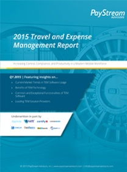

Gartner Analyst Report: Ten Things to Consider When Planning a Travel Expense Management ProjectApptricity is noted as a Specialist TEM provider in this Gartner July 2015 Analyst Report. |
Gartner Analyst Report: Technology Overview for Travel Expense Management ApplicationsApptricity is a Specialist TEM provider in this Gartner January 2015 Analyst Report. |
Gartner Analyst Report: Market Snapshot: ERP Software, Worldwide, 2015Apptricity listed as a ERP software vendor with market share in this Gartner May 2015 report. |
| Read More | Read More | Read More |
Gartner 2014 Magic Quadrant for Warehouse Management SystemsApptricity Warehouse received a Notable Mention in Gartner's September 2014 Magic Quadrant for Warehouse Management Systems. |

2015 Travel and Expense Management ReportApptricity is featured as a Travel and Expense Management (TEM) leading developer in this report published by PayStream Advisors. The report explores the ways TEM software manages the tracking, approval, and reimbursement process for the traveling corporate workforce. |
Supply Chain Management in the 21st CenturyThis complimentary white paper published by Bloor Research defines the current state of supply chain to aide in your decisions and strategy regarding supply chain operations. |
| Read More | Read More | Read More |
Gartner does not endorse any vendor, product or service depicted in its research publications, and does not advise technology users to select only those vendors with the highest ratings or other designation. Gartner research publications consist of the opinions of Gartner's research organization and should not be construed as statements of fact. Gartner disclaims all warranties, expressed or implied, with respect to this research, including any warranties of merchantability or fitness for a particular purpose.